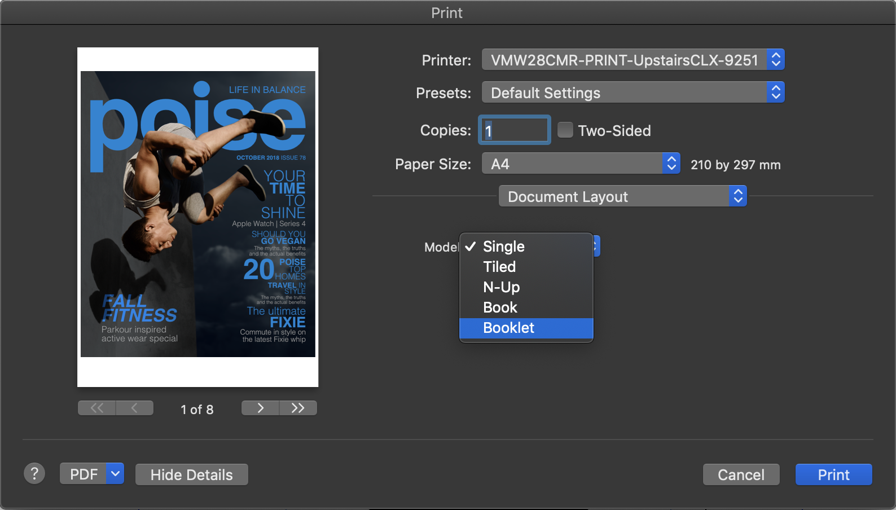
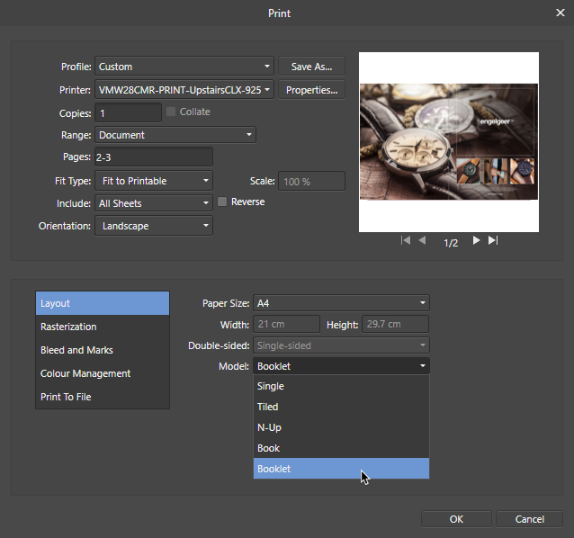

You can print specific or all pages of your publication, or choose various layouts such as tiled, N-Up (ganged) or booklet.


The print feature lets you print out your document using different layouts.
The final print of the page will include all currently visible objects. Layer visibility and exportability is controlled by the Layers panel.
When printing, you may be warned about overflowing text in your publication. To resolve, check your text frames for frame text that extends over the frame end.
It's possible to automatically impose your booklet and print directly to your printer or generate a PDF output, which acts as a 'stepping stone' before being sent for physical printing.
Imposition means that your pages are flipped and reordered at print time so that when printed sheets are produced, they can be folded so pages come together in their correct order.
These simple tips will help you get great results:
* This step assumes you're using duplex printing. If this isn't available to you, you can skip these steps and print odd and even pages on opposite sides of your paper in consecutive print stages. Use 'Odd Only' and 'Even Only' options in the Print Options pop-up menu's 'Paper Handling' section.